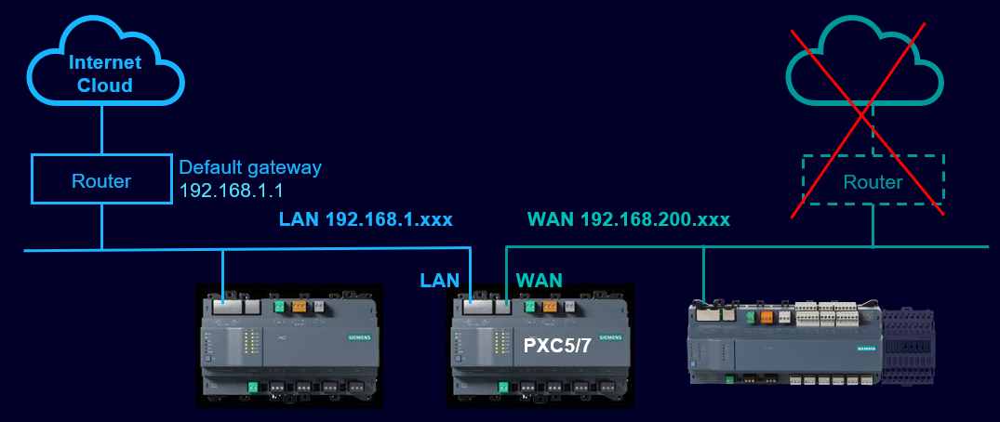
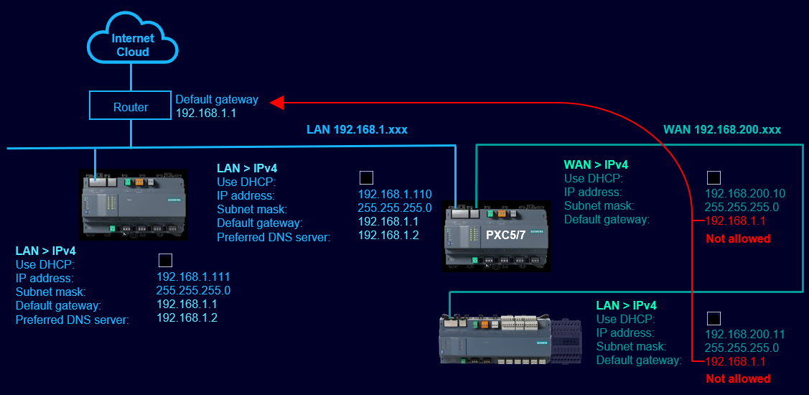
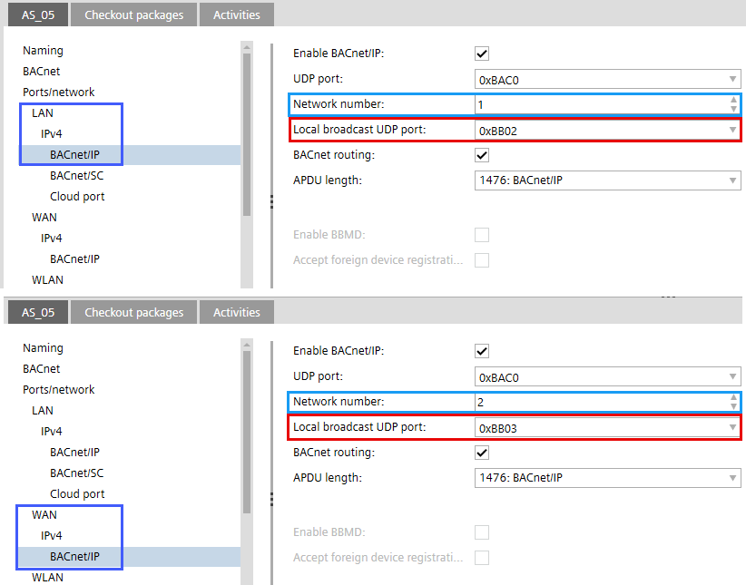
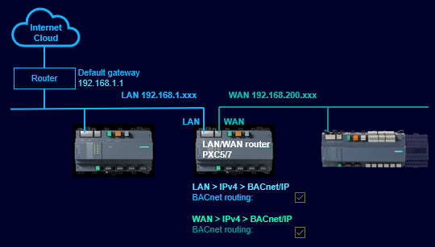
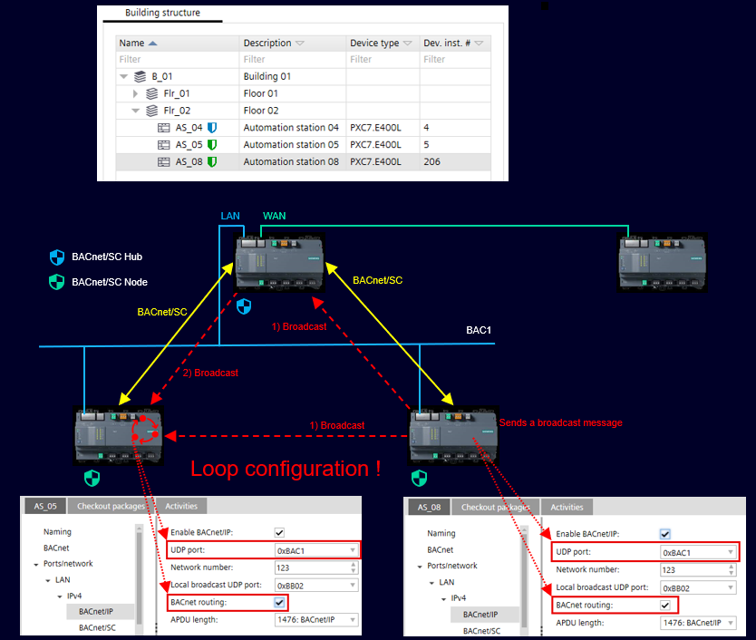

Topology examples with settings and restrictions
The following information in the table are valid for all topologies. Specific information is mentioned separately for the corresponding topologies.
Topic | Description |
|---|---|
Physical connection | All devices that will only communicate via one port must be connected via the LAN port. |
Internet connection | A connection to the Internet is only possible from the LAN port.  |
Default gateway | The connection to the Internet via the router (default gateway) must be made via the LAN port. A connection from the WAN port via a default gateway to the Internet is not supported (see also Internet connection above). |
Default Gateway settings | It is not permitted to reference the default gateway from the WAN devices to the LAN router, for example, 192.168.1.1. The setting for all devices in the WAN subnet must be 0.0.0.0.  |
DNS server | No DNS server is supported in the WAN subnet. DNS on the WAN side can only resolve WAN local addresses. |
Network numbers UDP broadcast ports configuration |
 |
BACnet routing | BACnet routing is only supported for BACnet communication, if BACnet routing is enabled on both sides.
Note: This means that no download can take place from LAN side to a device on WAN subnet, as this is not BACnet data. |
BACnet routing on LAN/WAN router | BACnet routing must be activated on the LAN/WAN router for the LAN port and the WAN port. BACnet routing maybe also switched on for MSTP connections.  Note: If several BACnet routers are routed to the same BACnet network, care must be taken to ensure that no loops are created.  |
Download | The control program or firmware cannot be downloaded from the LAN port via the WAN port or vice versa. ABT Site must be connected to the respective subnet in order to perform a download (see also BACnet routing above). |
Engineering |
|
Discovering devices | BACnet devices can be discovered on the opposite subnet using the Web UI:
|
Commissioning | Engineering and commissioning from LAN to WAN and vice versa is not supported, but initial device configuration is always performed on-premise. |
General information to the LAN / WAN topologies
Recommendation |
|---|
LAN and WAN are physically completely separated. Segments completely separated. |
Due to the higher cybersecurity risk, IT departments may divide IT landscapes into distinct realms for office LAN and OT LAN(s), each with dedicated servers (DHCP, DNS). |
Requires IT investment in strict separation and we expect this to happen in critical infra projects where you want to make a true separation on all levels. |
Requires completely independent network infrastructures which must be created and maintained. |
Connection over the Internet as an independent network is required. |
On WAN side, we do not support multiple segments (no default gateway possible). |
Not recommend scenario |
|---|
LAN and WAN connected to the same segment - Two BACnet IP segments with different UDP ports, where all devices are on the same segment. |